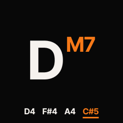
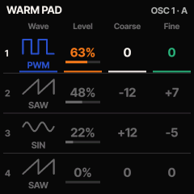
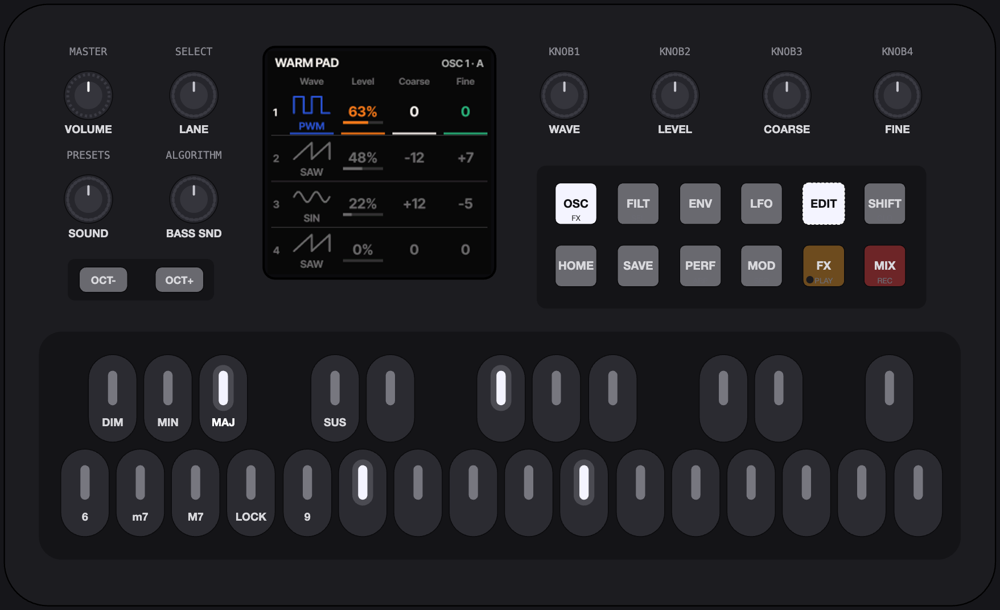
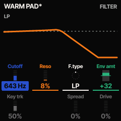
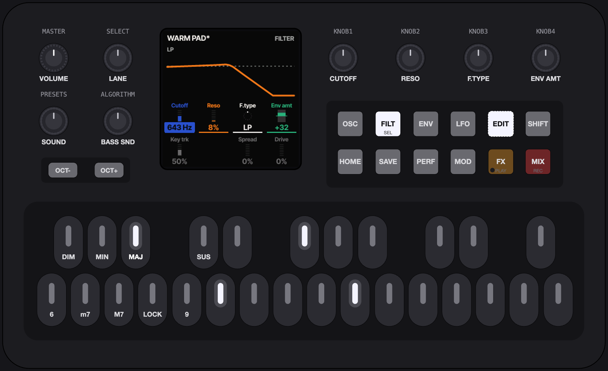

Install directly to your FM-1 from Chrome or Edge.
Melodic Exploration, Not a Groovebox
One hand plays root notes while the other shapes the chords. The screen shows one thing at a time, BIG.


Get it
Try it first
The exact same firmware, running in your browser. No FM-1 needed. Chrome, Edge and Firefox supported.
The installer talks to the FM-1 over Web MIDI. The firmware it runs now (stock, Felucca or ChoralRoot) stages the update loader, the loader writes the whole image, then the FM-1 restarts and reports {{PRODUCT}}. Do not unplug it while it writes. An interrupted install resumes when you press Install again: the FM-1 stays in update mode.
On the command line, from the source: pip3 install mido python-rtmidi, then python3 tools/fm1_install.py {{PKG}}. --info prints the connected FM-1's identity.

The sound editor
EDIT tap opens it on the chord sound, BASS held + EDIT on the bass sound; inside, SHIFT + EDIT switches between them. EDIT tap or HOME leaves. Every group remembers its screen and lane.


Groups
The buttons become seven groups. The top row is the signal flow (OSC on the printed FX, FILT on SEL, ENV, LFO), the bottom row the output stage (MOD on SEQ, FX on PLAY, MIX on REC). A group's button opens the group; tapped again, its next screen.
Lanes
SELECT runs through the lanes. A lane is the four values on KNOB 1–4, always in the same four colours.
KNOB 1
KNOB 2
KNOB 3
KNOB 4
A detent is 5 % of the range, an enumeration one step. SHIFT (GLO: a tap latches it, a hold is momentary) makes it one unit a detent.



The engine picker
EDIT held, or PRESETS turned in the editor, opens it as a preview. The white roots are the engines: ANALOG, FM6, VA, PHASE, LOFI, VOICE, TRIO, WHEEL, PHYS and NOISE. KNOB 1 steps the engine's factory presets, KNOB 2 inits the sound. OCT+ or EDIT keeps it; OCT− or HOME cancels, and the sound comes back.
Quick mapping
For an engine with a matrix (the VA): ENV held + a knob turned, and the envelope last shown modulates that knob's parameter, the amount on the knob. LFO held + a knob does the same with the LFO. OCT− held + a knob clears the parameter's modulation. A modulated cell carries a small mark in the source's colour.
SAVE
SAVE opens the save dialog. KNOB 1 picks the user slot, U01–U32; the white roots type the name, D#4 is a space, F#4 deletes. SAVE again or OCT+ saves, OCT− cancels. SAVE held 1 s on a used slot deletes it. User chord sounds list after the factory bank on PRESETS, user bass sounds on ALGORITHM.
Sounds
PRESETS browses the chord sounds, ALGORITHM the bass sounds. Eight voices are shared: a six-note chord plus the bass.
Chord bank PRESETS 1–43
- TINE EP
- FM BELL
- PIANO
- FM PAD
- SOFT PAD
- STRINGS
- PWM STRINGS
- CZ STRINGS
- FULL ORGAN
- GOSPEL ORGAN
- JAZZ ORGAN
- FM ORGAN
- CZ ORGAN
- CHOIR
- CLOUD PAD
- SHIMMER
- SYNTH BRASS
- CZ BRASS
- MARIMBA
- HARP
- KALIMBA
- PLUCK
- FM PLUCK
- SINE KEYS
- LUSH PAD
- WARM PAD
- GLASS PAD
- SLOW STRINGS
- ENSEMBLE STR
- VA BRASS
- SOFT BRASS
- POLY KEYS
- PWM KEYS
- CLAV
- SOFT LEAD
- HOLLOW
- BELLS
- SWEEP PAD
- SOFT AAH
- ORGANISH
- MORPH PAD
- VINYL KEYS
- WIDE STRINGS
25–43 are the VA's.
Bass bank ALGORITHM 1–12
- SUB BASS
- SQUARE BASS
- FM BASS
- FAT BASS
- ACID BASS
- WAVE BASS
- WOW BASS
- PLUCK BASS
- DEEP SUB
- PUNCH BASS
- RUBBER BASS
- SYNC BASS
0 = off.
After the banks come 32 user slots, saved with SAVE, then every engine's own factory presets through the engine picker.
Engines
All synthesis: Felucca's ANALOG, FM6 (six-operator FM, msfa), PHASE (phase distortion), LOFI, VOICE (formant), TRIO, WHEEL (tonewheel organ), PHYS (modal and string physical models) and NOISE; and ChoralRoot's VA. No samples: the firmware leaves out Felucca's SAMPLE, GRAIN and DRUM engines.
The VA
ChoralRoot's own four-oscillator virtual analog, written for this project in fixed point: four oscillators (basic waves, a morphing wave from sine to pulse, or white / brown / vinyl noise), a state-variable filter that morphs LP → BP → HP → notch with spread and drive, four AHDSR envelopes, four LFOs (free or synced to the tempo) and an eight-slot modulation matrix, in stereo. Every parameter is on the editor's screens, and a patch saves with the sound.
MIDI
USB MIDI in and out, TRS MIDI in.
Out
Three streams, each on its own channel and each on or off in Options: performance (the chord as played or performed) on channel 1, bass on channel 2, the raw chord on channel 3 (off by default, as on the Orchid). 24 PPQN clock out (Options > MIDI Clock: Out), with start when the loop starts.
In
Notes on the chord channel play the chord sound directly, with no chord generation, as on the Orchid; notes on the bass channel play the bass sound. CC 7 is the level, CC 91 / 93 / 94 the reverb / chorus / delay sends; program change picks the sound. Clock in syncs the tempo (MIDI Clock: In). SysEx is used for firmware updates.
No Bluetooth: ChoralRoot never turns the radio on.
Recovery
The installer's Return to official V15 puts M-VAVE's firmware back.
Download the official FM-1 V15 firmware (FM-1.fwsc) yourself from M-VAVE's downloads page and select it in the installer. The browser checks its size and SHA-256 locally (the file is never uploaded) and installs it the same way. On the command line: python3 tools/fm1_install.py FM-1.fwsc.
The installer's Back up saves everything stored on the FM-1 (the settings, the 32 user sounds with their patches, the loops, the FM6 patch bank and the CZ-1 banks) to one .json file, and Restore writes it back; Return to official V15 saves one first. Its Sounds section exports, imports and renames single user sounds as files.
If an install fails and the FM-1 no longer starts, recovery needs FM-1-transporter.
Credits and licence
ChoralRoot was made by Quixotic7 with the assistance of his AI Overlords: Claude Fable 5.1 and Claude Opus 5.5. ChoralRoot is free, don't like something, feel free to make your own version. ChoralRoot FM-1 is free software under the GNU General Public License, version 3 only: LICENSE. The package and this site carry LICENSING.md and the licence texts in LICENSES.
- Felucca by Leo Kuroshita (@kurogedelic), Hügelton Instruments: the platform, the engines, the installer, the update loader; with its CrispyZebra waveforms (MIT). github.com/hugelton/Felucca
- The chord logic is inspired after the Telepathic Instruments Orchid ORC—1 and Quixotic7's prior monome grid iii adaption choralroot.
- Inter Tight by The Inter Project Authors (SIL OFL 1.1, OFL.txt): the UI font, and this page's.
- DaisySP (Electrosmith, Emilie Gillet) and Rings (Emilie Gillet), MIT: the PHYS engine.
- msfa from Dexed (Google, Pascal Gauthier), Apache-2.0: the FM6 engine.
- JieLi AC79 SDK: the package holds three of its files (uboot.boot, cfg_tool.bin, eq_cfg_hw.bin; JieLi Technology, Apache-2.0). No M-VAVE material.